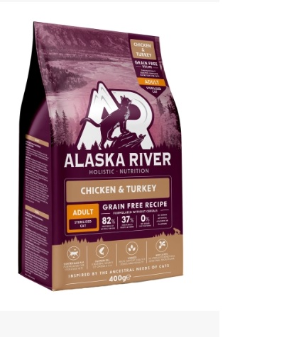
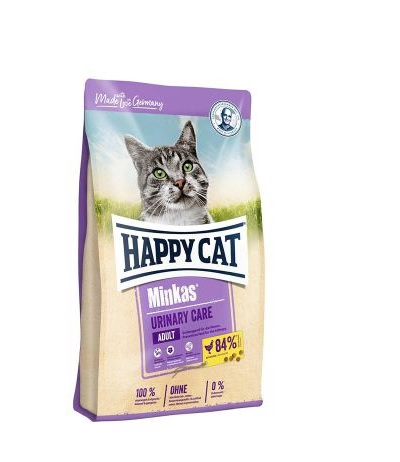

|

Πλήρης ολιστική τροφή, χωρίς σιτηρά, με κοτόπουλο
και γαλοπούλα, για ενήλικες στειρωμένες γάτες.
Η τροφή αυτή περιέχει πολτό τεύτλων
και φρουκτοολιγοσακχαρίτες για την ομαλότερη εντερική λειτουργία, λιναρόσπορος
και λάδι σολομού για την καλύτερη υγεία του δέρματος, του τριχώματος, του εγκεφάλου
και της καρδιάς καθώς και yucca schidigera και cranberries, πλούσια πηγή
αντιοξειδωτικών συστατικών, που προστατεύουν την τροφή της από την οξείδωση
και διατηρούν φρέσκα όλα τα θρεπτικά συστατικά.
|

Πλήρης τροφή με πουλερικά,
για ενήλικες γάτες. Η τροφή αυτή
είναι ειδικά σχεδιασμένη για την προστασία του ουροποιητικού συστήματος.
Η υψηλής ποιότητας, εύκολα αφομοιώσιμη πρωτεΐνη και η μειωμένη
περιεκτικότητα σε μαγνήσιο και φώσφορο μπορούν να μειώσουν
το pH των ούρων και έτσι να ανακουφίσουν την πίεση στο
ουροποιητικό σύστημα ως προληπτικό μέτρο.
|